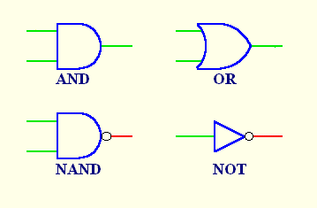
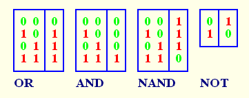

|
[ Home ][ Up
]
Follow the operation of the gates and inverter here.
|  |
|  |
| I have drawn up tables representing the operation of
each gate and the inverter. You may find it easier to follow their properties through the
tables. These are called truth tables. The 1s represent high signals and the 0s low
signals. |
David N. Warren-Smith
20 October, 1998
|